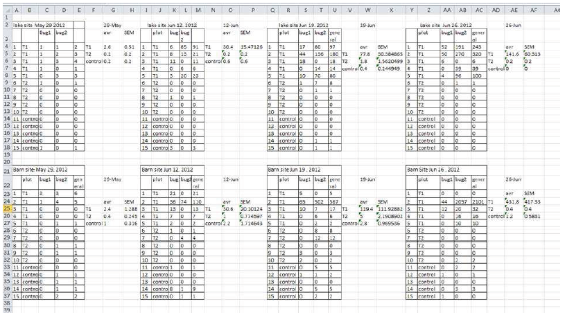
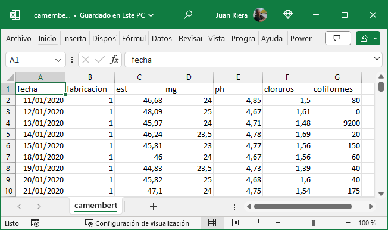
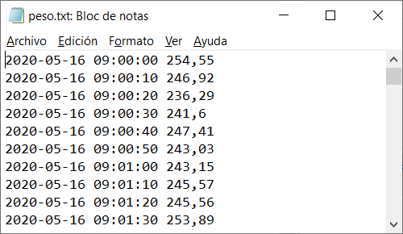
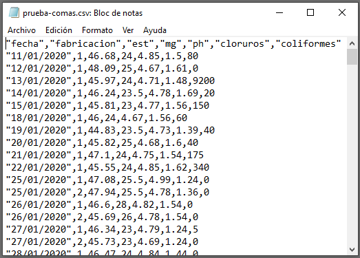
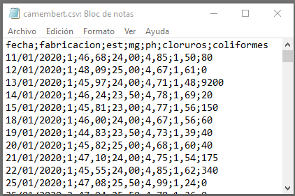

3La organización de los datos y el flujo de trabajo.Los datos ordenados o arreglados (tidy data)
Un flujo de trabajo en análisis de datos es un proceso sistemático y estructurado que guía la manipulación, exploración y análisis de datos desde su recolección hasta la obtención de resultados finales y su comunicación. Es una hoja de ruta que asegura que cada paso se realice de manera ordenada, eficiente y reproducible, facilitando la comprensión y utilización de los datos.
Este flujo de trabajo abarca diversas actividades como la importación de datos, su limpieza y transformación, el análisis exploratorio, y el modelado, culminando en la interpretación y presentación de los resultados. Todo esto se hace siguiendo metodologías específicas para asegurar la calidad y precisión del análisis.
La importancia de seguir un flujo de trabajo bien definido radica en la capacidad de replicar estudios, minimizar errores y fomentar la transparencia, permitiendo que cualquier persona pueda entender y validar las decisiones tomadas durante el análisis. Además, mejora la eficiencia al estandarizar procedimientos y facilita la colaboración entre diferentes analistas o equipos de trabajo.
3.1 Etapas en un flujo de trabajo estructurado.
3.1.1 Recolección de datos
La primera etapa es la recolección de datos. Esto implica obtener datos desde diversas fuentes como archivos CSV, bases de datos, APIs, etc. La recolección de datos es fundamental porque la calidad del análisis depende de la calidad de los datos recolectados.
3.1.2 Inspección de los datos
Una vez recolectados, se procede a inspeccionar los datos para entender su estructura y contenido. Esto incluye examinar los tipos de datos, la presencia de valores faltantes, duplicados y la distribución de las variables.
3.1.3 Limpieza de los datos
La limpieza de datos es crucial para asegurar que la información sea precisa y esté en el formato adecuado. Esta etapa incluye:
Manejo de valores faltantes.
Eliminación de duplicados.
Corrección de inconsistencias.
Transformación de datos a un formato adecuado para el análisis.
3.1.4 Transformación de los datos
Transformar los datos a un formato ordenado o arreglado (tidy) es esencial. Según Wickham, los datos arreglados tienen una estructura clara: cada variable es una columna, cada observación es una fila, y cada valor tiene su propia celda. Este formato facilita el análisis y la visualización de datos.
3.1.5 Análisis exploratorio de datos (EDA)
El Análisis Exploratorio de Datos (EDA) busca entender los patrones y relaciones en los datos mediante estadísticas descriptivas y visualizaciones. Durante esta etapa se realizan:
Gráficos y diagramas para visualizar la distribución de los datos y las relaciones entre variables.
3.1.6 Modelado de datos
Dependiendo del objetivo del análisis, se pueden aplicar diversos modelos estadísticos para extraer información y hacer predicciones. Esto puede incluir:
Modelos de regresión.
Análisis de clasificación.
Modelos de series temporales, entre otros.
3.1.7 Comunicación de resultados
Finalmente, es fundamental comunicar los resultados de manera clara y efectiva. Esto se hace a través de:
Tablas y resúmenes interpretativos.
Gráficos y visualizaciones.
Informes y presentaciones que expliquen los hallazgos y sus implicaciones.
Siguiendo estos pasos, puedes manejar y analizar datos de manera organizada y reproducible, facilitando la colaboración y la toma de decisiones informadas. Este flujo de trabajo asegura que los datos se traten de manera sistemática, desde su recolección hasta la comunicación de los resultados.
3.2 Razones para seguir un flujo de trabajo
Reproducibilidad: Un flujo de trabajo organizado permite que los análisis sean reproducibles. Otros pueden seguir los mismos pasos para obtener resultados similares, lo que es crucial en la investigación y en la toma de decisiones basadas en datos.
Consistencia: Ayuda a asegurar que los pasos se realizan de manera consistente cada vez que se ejecuta el análisis, reduciendo la posibilidad de errores humanos.
Transparencia: Proporciona un registro claro de los pasos tomados durante el análisis, facilitando la revisión y validación de los resultados.
Eficiencia: Mejora la eficiencia al estandarizar el proceso, permitiendo a los analistas concentrarse en el análisis y la interpretación de los datos en lugar de tareas repetitivas.
Colaboración: Facilita la colaboración entre equipos, ya que los flujos de trabajo bien documentados permiten que otros comprendan fácilmente los métodos y pasos utilizados.
Adaptabilidad: Permite adaptar y ajustar el análisis de manera más fácil cuando se presentan nuevos datos o cuando cambian los objetivos del análisis.
3.3 Problemas de no seguir un flujo de trabajo estructurado
Errores y Sesgos: La falta de un enfoque estructurado puede resultar en errores y sesgos inadvertidos en el análisis, lo que puede llevar a conclusiones incorrectas.
Dificultad para Replicar Resultados: Sin un flujo de trabajo claro, replicar resultados se vuelve complicado, lo que puede afectar la credibilidad del análisis y la capacidad de validación por otros.
Falta de Documentación: La ausencia de una documentación adecuada dificulta entender los pasos y las decisiones tomadas durante el análisis, lo que puede ser un obstáculo en auditorías y revisiones.
Ineficiencia: Sin una estructura clara, los analistas pueden gastar tiempo valioso realizando tareas repetitivas y resolviendo problemas que podrían haberse evitado con un enfoque más organizado.
Problemas de Colaboración: La colaboración se vuelve más difícil si los miembros del equipo no pueden seguir o entender los pasos tomados por otros, lo que puede llevar a malentendidos y duplicación de esfuerzos.
Dificultad para Adaptarse a Cambios: Sin un flujo de trabajo definido, adaptar el análisis a nuevos datos o cambios en los objetivos puede ser más complejo y propenso a errores.
En resumen, seguir un flujo de trabajo estructurado es esencial para garantizar la precisión, eficiencia, y reproducibilidad del análisis de datos, evitando problemas que puedan comprometer la integridad y utilidad de los resultados. .
3.4 Un ejemplo: revisando los datos existentes.
Cuando nos incorporamos a un equipo de trabajo existente, lo más seguro es que ya se disponga de un sistema de archivo de los datos, de acuerdo con los métodos habituales del equipo. En muchos casos, el diseño de la captura de datos sigue aproximadamente el modelo manual en papel; se introducen los datos en la hoja de cálculo y una vez completados, se imprime el documento para su archivo.
El error más común que se suele cometer es, precisamente, tratar la hoja de cálculo como un bloc de notas, es decir, hacer anotaciones de forma libre, colocar los datos y el resultado de los análisis al lado y en cualquier parte de la hoja, y apoyarnos en el contexto para interpretar lo que hemos guardado. Pero para que el ordenador sea capaz de analizar nuestros datos de manera eficiente, debemos estructurarlos de tal forma que el programa use la información tal como nosotros queremos.
Es común utilizar una hoja para guardar múltiples tablas de datos, tal como vemos en la Figura 3.1. Esta estructura, sin embargo, resulta enormemente confusa para su análisis, o lo imposibilita completamente.

Figura 3.1: Hoja Excel desordenada: ¡No hagas esto!
En otros casos, los datos se guardan en hojas de cálculo que se componen de diferentes pestañas para cada semana, cada mes o cada año, como vemos en la Figura 3.2. Sin embargo, esta forma de almacenar los datos tampoco es la óptima para su análisis.
Figura 3.2: Hoja Excel con una estructura no ordenada
Si las diferentes tablas presentan situaciones diferentes, o datos que no están relacionados, podemos utilizar diferentes pestañas. Pero si los datos están vinculados, por ejemplo, se corresponden con las mismas medidas, hechas en fechas diferentes (meses, años), la respuesta es que las pestañas no son la forma correcta de almacenarlos datos; lo mejor es añadir una variable que nos permita diferenciar los datos por fecha; nuestro programa de análisis nos permitirá filtrar los datos según la fecha que deseemos, y todos estarán en una única tabla, facilitando la coherencia y el análisis posterior.
Hay muchas formas de almacenar la información en una hoja de cálculo, pero sólo la estructura de datos ordenados o arreglados facilita la utilización de los datos tanto por la hoja de cálculo como por otros programas de análisis.
3.5 Los datos ordenados o arreglados (tidy data)
De la misma manera que la gramática permite ordenar y estructurar un escrito de acuerdo a reglas comunes, hay reglas para que el almacenamiento de los datos sea lo más homogéneo posible y se reduzcan los errores al mínimo.
Las reglas principales al almacenar nuestros datos en una hoja de cálculo son tres:
columnas=variables,
filas=observaciones,
celdas=valores.
Cada variable debe tener su propia columna, cada observación debe tener su propia fila, y cada valor debe tener su propia celda o casilla .
La Figura 3.3 muestra estas reglas de forma visual.
Figura 3.3: Sigue estas tres reglas para tener un conjunto de datos ordenado: las variables están en columnas, las observaciones están en filas, y los valores están en celdas. Fuente de la imagen: Garret Grolemund Hadley Wickham Mine Çetinkaya-Rundel (2023)
Estas tres reglas están interrelacionadas porque es imposible satisfacer sólo dos de tres.
En una hoja de cálculo, una tabla de datos arreglada tendría este aspecto:

Figura 3.4: Hoja Excel con estructura rectangular de datos ordenados
Datos rectangulares: formato tabla
3.6 Qué es un fichero plano y un fichero CSV
Se suele llamar fichero plano a un fichero de datos de texto sin ningún tipo de formato, donde los datos están separados por espacios o tabulaciones. Muchos equipos automáticos, como balanzas de laboratorio o básculas de proceso, producen ficheros planos de texto, que se pueden importar a Excel o R. Un fichero CSV es un fichero plano en el que los valores están separados por un carácter especial, llamado separador. Este separador puede ser una coma , (cuando los decimales se separan mediante un punto, como en EEUU) o un punto y coma ; (cuando los decimales se separan mediante una coma, como en España)

Fichero plano separado por espacios

Fichero CSV separado por comas (USA, GB)

Fichero CSV separado por puntos y comas (Europa, España)
Figura 3.5: Tres tipos de ficheros planos de texto.
En un fichero plano o en un fichero CSV, la primera fila puede contener los nombres de las columnas. En algunos casos, los elementos de texto pueden estar entre comillas. En estos casos, los programas de importación se ocupan de la conversión de formatos.
La importación de un fichero CSV en Excel en español es directa si se ha generado con puntos y comas como separador y comas para los decimales; si no es así, nos aparecerá como un fichero plano de texto sin formato, y tendremos que realizar una conversión.
3.6.1 Cómo exportar un fichero CSV desde Excel a R
Una vez que tenemos nuestros datos en Excel, hay dos formas en las que podemos poner los datos a disposición de R para su análisis: exportarlos a un archivo de texto con formato CSV, o leer directamente los datos de Excel desde R utilizando la función read_excel() de la librería tidyverse. En ambos casos, el resultado en R es un dataframe o cuadro de datos, que es una estructura equivalente a la de nuestra tabla de datos en Excel.
En el ejemplo, utilizaremos un fichero CSV y lo leeremos utilizando una función de base R.
3.6.1.1 Paso 1: Guardar el Fichero CSV desde Excel
Abre tu fichero en Excel.
Selecciona Archivo > Guardar como.
Elige el formato CSV (delimitado por comas) (*.csv).
Guarda el archivo.
3.6.1.2 Paso 2: Importar el CSV en R usando Base R
Explicación del código R
Línea 1: Lectura del archivo CSV
datos <-read.csv2("ruta/al/archivo.csv", header =TRUE, sep =";", dec =",")
datos <-: Este símbolo <- se utiliza para asignar el resultado de la función a un objeto llamado datos. En este caso, datos contendrá los datos leídos desde el archivo CSV.
read.csv2(...): Esta es una función en R que se utiliza para leer archivos CSV. La versión read.csv2 se usa comúnmente en Europa y otros lugares donde el separador de campo estándar es el punto y coma (;) y el separador decimal es la coma (,).
Parámetros de read.csv2:
"ruta/al/archivo.csv": Especifica la ruta y el nombre del archivo CSV que deseas leer.
header = TRUE: Indica que el archivo CSV tiene una fila de encabezado que contiene los nombres de las columnas.
sep = ";": Especifica que el separador de campos en el archivo CSV es el punto y coma (;).
dec = ",": Indica que el separador decimal en el archivo CSV es la coma (,).
Línea 2: Mostrar las primeras filas del datosframe
head(datos)
head(datos): Esta función muestra las primeras 6 filas del dataframe datos (puedes cambiar el número de filas que muestra añadiendo un número como argumento: head(data, 10) mostrará las primeras 10 filas). Esta es una forma útil de inspeccionar rápidamente los datos que has cargado en R.
Resumen
Este código lee un archivo CSV con datos delimitados por punto y coma y con comas como separadores decimales, y almacena los datos en un dataframe llamado datos. Luego, utiliza la función head() para mostrar las primeras 6 filas del dataframe, permitiéndote inspeccionar los datos rápidamente.
datos <-read.csv2("excel-R/aula1.csv", header =TRUE, sep =";", dec =",", fileEncoding ="latin1")head(datos)
nombre altura_cm
1 Luis 153
2 Ana 135
3 Iván 140
4 Lucía 140
5 Jessica 175
6 Antonio 138
Practica con el CSV
Prueba a guardar y recuperar tus datos en formato CSV
3.7 Uso de los filtros de Excel para revisar y editar los datos
3.8 Para resolver
Poner aquí distintos ejemplos de nombres de variables para ver si son válidos o no. Describir medidas y preguntar cómo llamaríamos a esa variable (por ejemplo, temperatura de la leche que acabamos de descargar de una cisterna)
Hadley Wickham, Garret Grolemund, Mine Çetinkaya-Rundel. 2023. R for Data Science, 2nd ed. 1005 Gravenstein Highway North, Sebastopol, CA95472: O’Reilly Media Inc. https://r4ds.hadley.nz/.